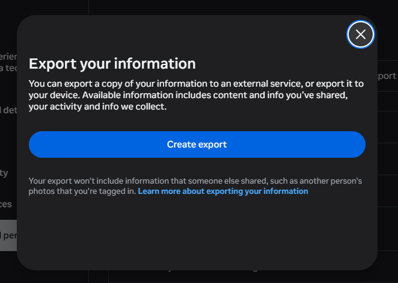
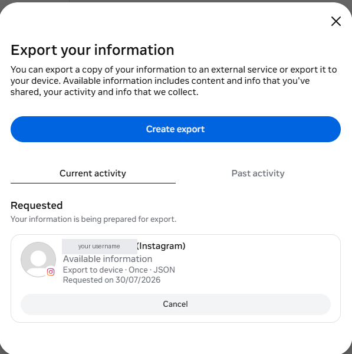

How to export your data from Instagram
Instagram is required to give you a copy of the data it holds about you, including photos, videos, messages and posts and social activity. The request itself is free, and arrives as .zip containing JSON or HTML files and media. Typical wait: minutes to a few days depending on size.
Meta Accounts Center - Download your information
Step by step
Every screenshot below is from Instagram's own pages on 30 July 2026.
-
Open Download your information
In the Instagram app or on the web, go to Accounts Center, then Your information and permissions, then Download your information.

The export lives in Meta's Accounts Centre now, not in Instagram's own settings. Note what it says: photos other people posted that you are tagged in are not included, because they are not yours. -
Choose the Instagram profile
Select the Instagram account whose data you want to export.
-
Select information and range
Choose which categories to include (posts, stories, messages, and more) and pick "All time" for everything.
-
Pick format and quality
Choose JSON for machine-readable data (best for Muletto) and set media quality to high.
-
Create the file and wait
Submit the request. Meta prepares your download and notifies you when it is ready.

Once submitted it appears under Current activity with the settings you chose, so you can check you actually asked for JSON. -
Download the file
Download every part before the link expires and keep the files together.
Worth knowing
Common questions
Why are the emoji in my Instagram export broken?
Instagram encodes JSON by escaping the raw bytes of each character, so emoji and accented letters come out mangled. Three of the four bytes of an emoji are invisible control characters, which is why a smiling face often shows as one stray letter. It is repairable, and Muletto repairs it.
Where are my Instagram photos in the download?
Under a media folder, sorted into posts, stories, reels and profile, with the dates held in the category JSON rather than inside the pictures. Recent exports may also include a public-media folder that duplicates some of it.
Does an Instagram export include my direct messages?
Yes, under your_instagram_activity and then messages, with one folder per conversation. Messages are stored newest first, and anything sent in a conversation sits alongside it in that folder.
How do I read an Instagram JSON export?
Open it with something that understands the layout. Muletto reads the archive in your browser and presents the posts, messages and likes as a timeline, without uploading anything.
What Muletto does with this export
Once your download arrives, open it in Muletto. The file is read in your browser, on your own machine - nothing is uploaded. You get a breakdown of what is inside, duplicate detection, and a browsable view of your photos, messages, timeline and records.